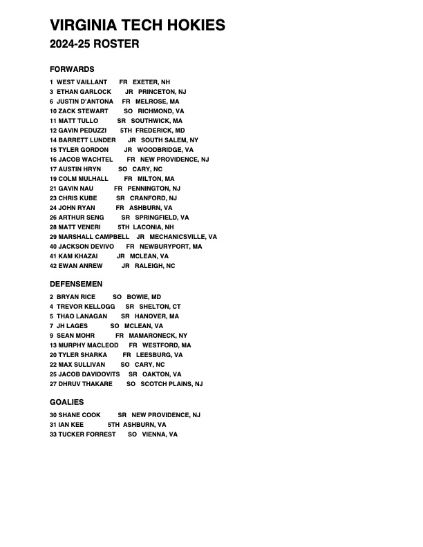

2024 / 25 ROSTER
THE ROSTER.
The official Virginia Tech Hokies roster from the 2024-25 season.
OFFICIAL TEAM DOCUMENT
Download PDF ↓Virginia Tech Club Hockey Roster

2024 / 25 ROSTER
The official Virginia Tech Hokies roster from the 2024-25 season.
